Click image to toggle actual size · Esc or click outside to close
The project involves the design and implementation of a custom 4-bit digital logic calculator capable of executing core operations entirely through fundamental logic gates and integrated circuits.
This calculator acts as a practical demonstration of hardware architecture, bridging the gap between theoretical logic and physical hardware design without relying on software-based microcontrollers.
Modern computing abstracts operations via software. However, designing a multi-operation ALU from scratch requires solving physical complexity challenges—such as precise multiplexer routing, finite state control, and strictly minimizing propagation delay across discrete physical ICs.
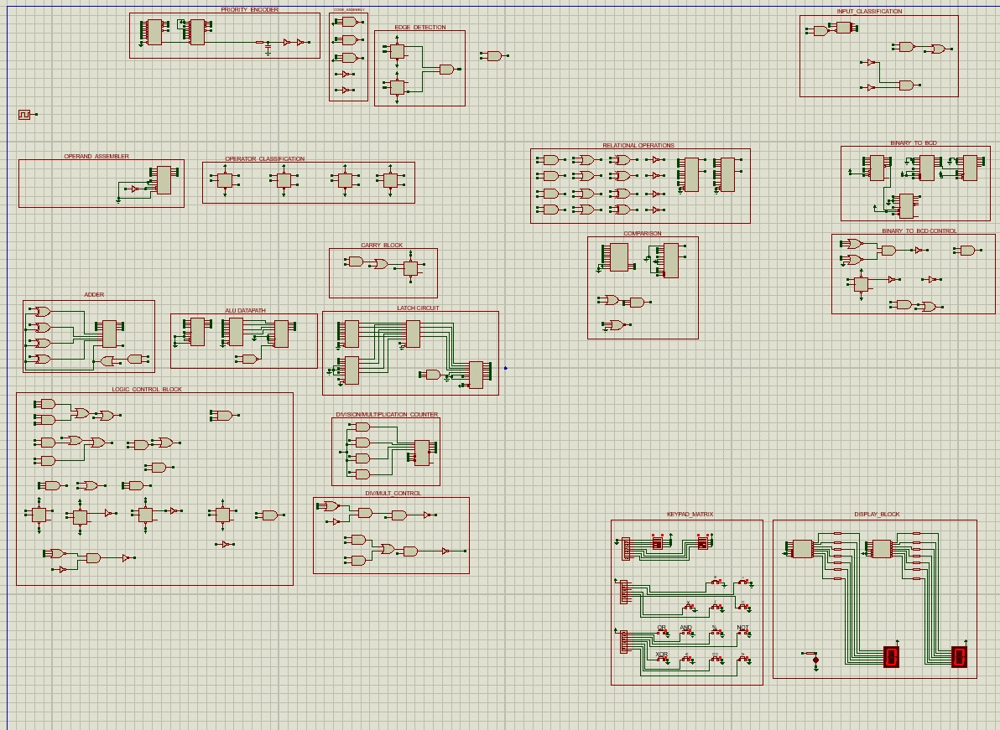
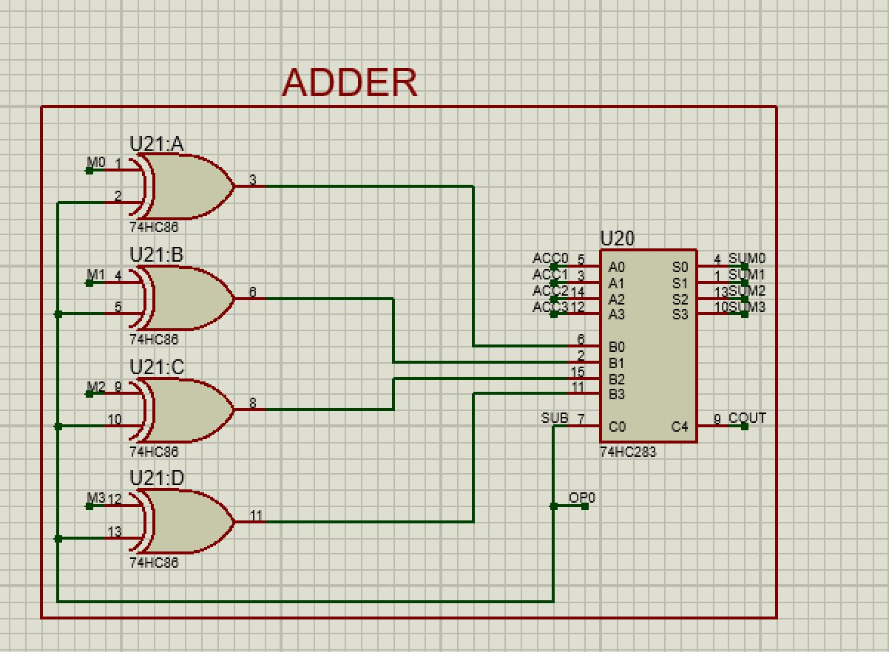
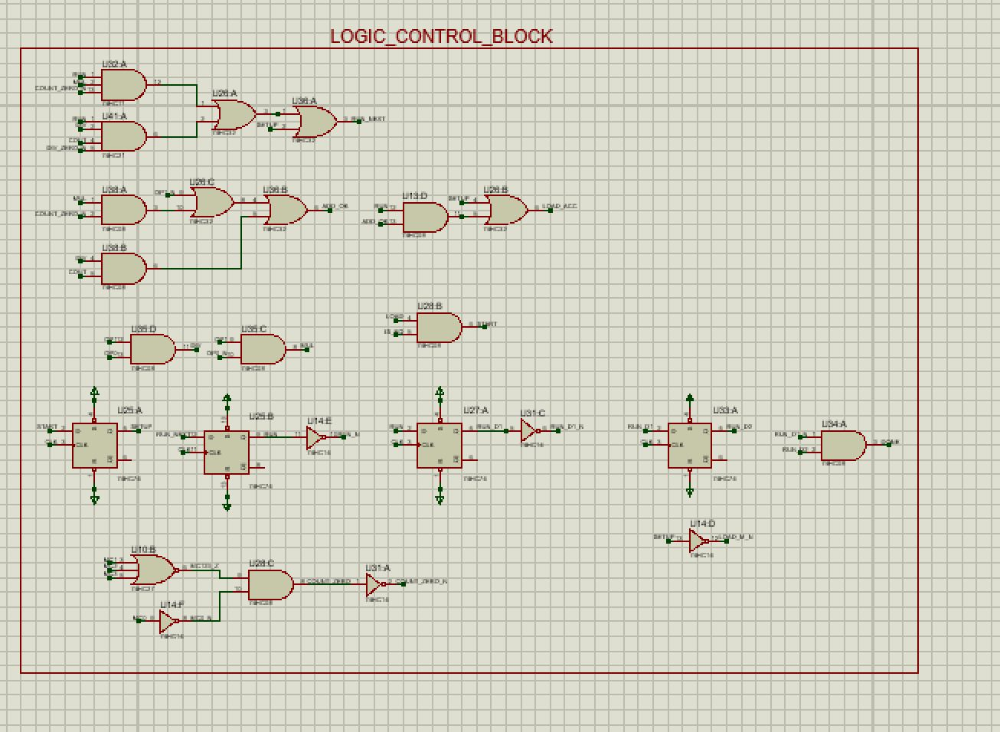
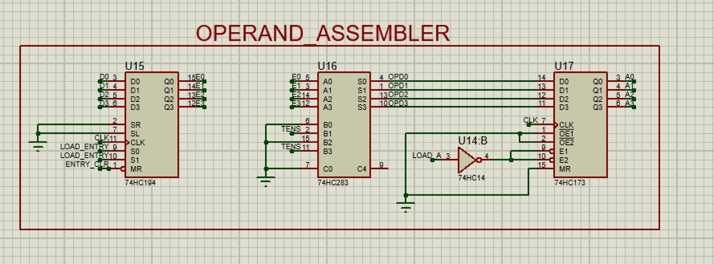
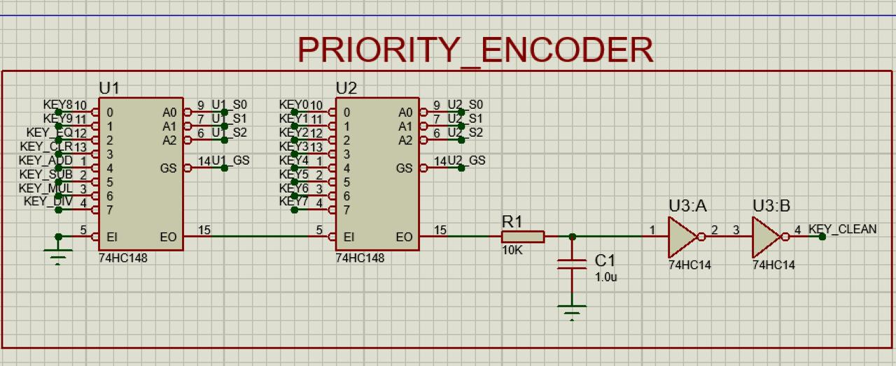
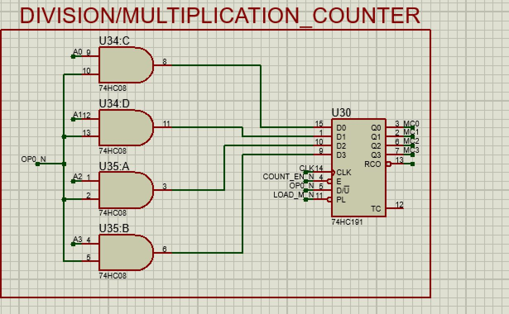
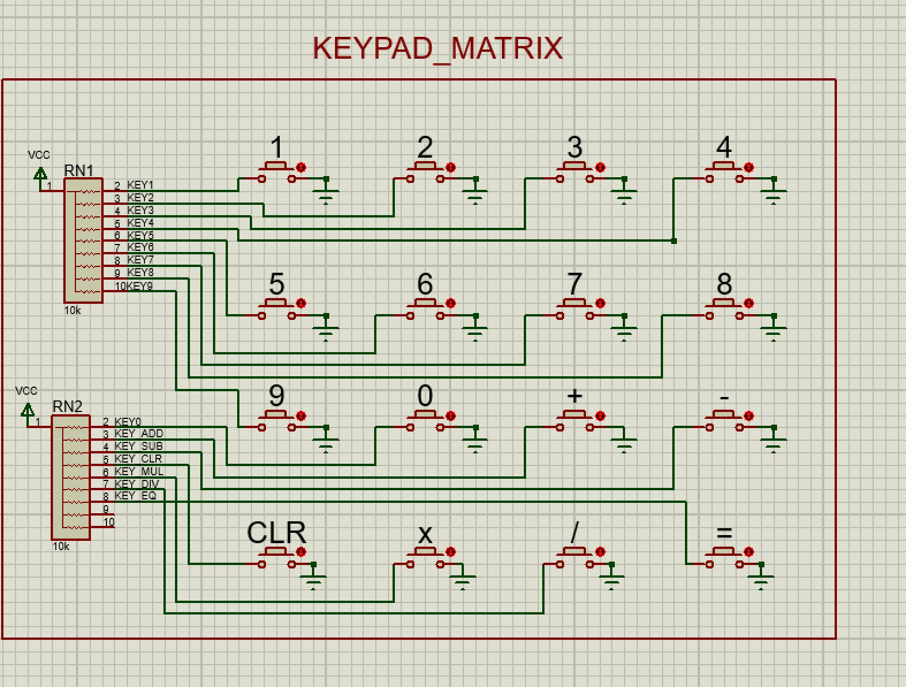
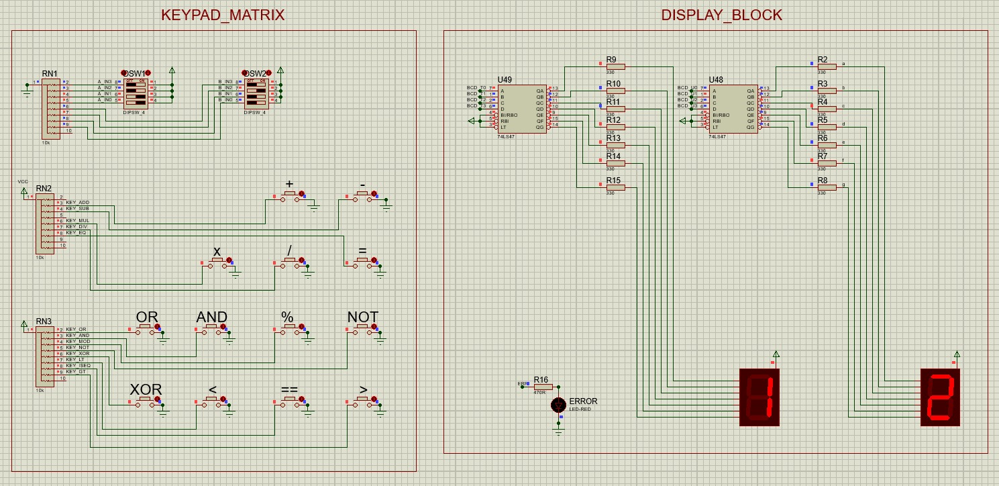
Operands A = 0011 (3) and B = 0100 (4) were entered, and the MUL key started the shift-and-add sequence. On every tick of the 555 clock, the circuit checked one bit of B, added the shifted copy of A to the running total whenever that bit was 1, and stepped the counter forward. After 4 clock cycles the counter stopped the operation, and the result 1100 appeared on the 7-segment displays as 12. This confirms that the sequential unit, counter and control logic work together correctly across multiple clock cycles.
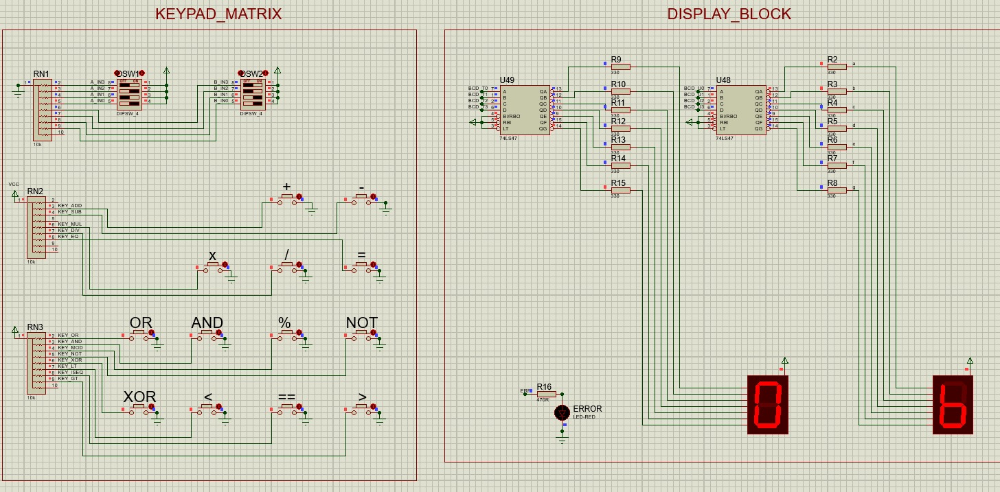
Operands A = 0101 (5) and B = 0011 (3) were entered and the XOR key was pressed. The 7486 XOR gates compared the two numbers bit by bit, giving a 1 only where the bits differ: 0101 ⊕ 0011 = 0110. The output MUX routed this to the display, which showed 6 straight away, with no waiting on the clock. This confirms that the logic unit gives an instant combinational result and that the operation-select path picks the correct unit.
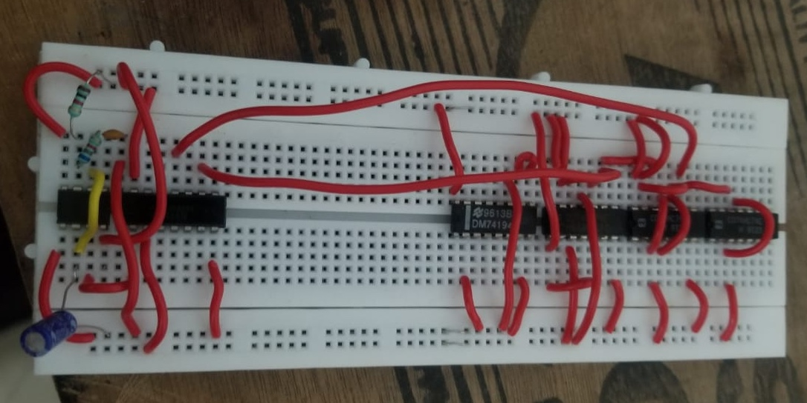
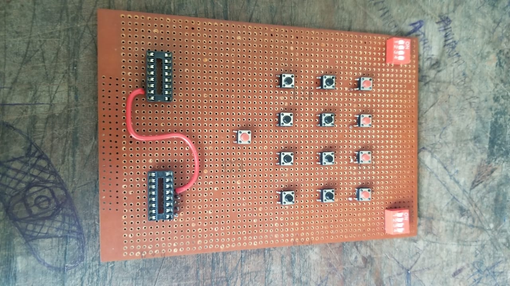
| Component | Specification | Qty | Cost (₹) |
|---|---|---|---|
| 74148 | 8-to-3 Line Priority Encoder | x2 | ₹70 |
| 7414 | Hex Schmitt-Trigger Inverter | x5 | ₹75 |
| 7474 | Dual D-Type Flip-Flop | x6 | ₹90 |
| 7408 | Quad 2-Input AND Gate | x10 | ₹120 |
| 7432 | Quad 2-Input OR Gate | x5 | ₹60 |
| 7400 | Quad 2-Input NAND Gate | x1 | ₹10 |
| 7427 | Triple 3-Input NOR Gate | x2 | ₹36 |
| 74139 | Dual 2-to-4 Line Decoder | x1 | ₹25 |
| 74194 | 4-Bit Bidirectional Universal Shift Register | x1 | ₹35 |
| 74283 | 4-Bit Binary Full Adder (Fast Carry) | x2 | ₹60 |
| 74173 | 4-Bit D-Type Register (3-State) | x2 | ₹70 |
| 7486 | Quad 2-Input XOR Gate | x2 | ₹30 |
| 74157 | Quad 2-to-1 Line Multiplexer | x4 | ₹100 |
| 74273 | Octal D-Type Flip-Flop with Clear | x1 | ₹40 |
| 74191 | 4-Bit Synchronous Up/Down Binary Counter | x3 | ₹105 |
| 7411 | Triple 3-Input AND Gate | x2 | ₹30 |
| 7421 | Dual 4-Input AND Gate | x1 | ₹20 |
| 74160 | Synchronous Decade (BCD) Counter | x2 | ₹60 |
| 7447 | BCD to 7-Segment Decoder/Driver (Active-Low) | x2 | ₹60 |
| Subtotal (1/2) | ₹1,096 | ||
| Component | Specification | Qty | Cost (₹) |
|---|---|---|---|
| 7410 | Triple 3-Input NAND Gate | x1 | ₹12 |
| 74153 | Dual 4-to-1 Line Multiplexer | x3 | ₹75 |
| 7485 | 4-Bit Magnitude Comparator | x1 | ₹35 |
| NE555 | Timer IC (Astable, 10 Hz System Clock) | x1 | ₹29 |
| DIP Switch | 4-Position (Operand A & B Input) | x2 | ₹30 |
| Push Button | Tactile (12 Operations + Equals) | x13 | ₹39 |
| Resistor Network | 10 kΩ SIP Array | x2 | ₹20 |
| 7-Segment Display | Common Anode, Single Digit | x2 | ₹30 |
| Red LED | 5 mm (Error Indicator) | x1 | ₹2 |
| Resistor | 10 kΩ (8 DIP Pull-downs + 1 Reset) | x9 | ₹9 |
| Resistor | 330 Ω (Segment Current Limiting) | x14 | ₹14 |
| Resistor | 470 Ω (LED) · 1 kΩ, 6.8 kΩ (555 Timing) | x3 | ₹3 |
| Capacitor | 10 µF Electrolytic (555 Timing) | x1 | ₹3 |
| Capacitor | 10 nF Ceramic (555 Control Pin) | x1 | ₹1 |
| Capacitor | 1 µF (Power-on Reset) | x1 | ₹2 |
| Capacitor | 100 nF Ceramic (104) Decoupling, 7 per IC | x60 | ₹420 |
| Subtotal (2/2) | ₹343 | ||
| GRAND TOTAL | ₹1,820 | ||
calculator_4bit_top.v module wires the system. The 6x4 matrix keypad is scanned and debounced by keypad_scanner.v, and raw signals are translated via key_decoder.v.calculator_core.v drives the sequencing through standard states: S_ENTER_A, S_ENTER_B, and S_RESULT, handling digit accumulation and operator latching.alu.v handles the immediate arithmetic (Add, Sub, Mul, Div, Mod), bitwise logic (AND, OR, XOR), and comparisons across double-width output.case (state) S_ENTER_B: begin if (is_digit) operand_b <= operand_b * 10 + digit_value; else if (is_equals) begin result <= alu_result; error <= alu_error; state <= S_RESULT; end end endcase
always @(*) begin div_by_zero = 1'b0; case (op_code) OP_ADD: result = a + b; OP_DIV: if (b == 0) begin result = 0; div_by_zero = 1'b1; end else result = a / b; endcase end
always @(*) begin case (row_idx) 3'd0: row = 6'b111110; 3'd1: row = 6'b111101; 3'd2: row = 6'b111011; 3'd3: row = 6'b110111; default: row = 6'b111111; endcase end
calculator_core #(.OPW(OPW)) u_core (
.clk(clk), .rst(rst),
.key_valid(key_valid),
.is_digit(is_digit), .digit_value(digit_value),
.is_op(is_op), .op_code(op_code),
.is_clear(is_clear), .is_equals(is_equals),
.result(result), .error(error)
);
calculator_tb.v physically models keypad column/row pulls to validate the entire hardware chain. Results confirm 2's complement logic bounds, zero-division error handling, and FSM chaining successfully pass standard arithmetic bounds.
Cumulative gate delays (t_pd) across cascaded adders and extensive MUX stages were actively measured and mitigated using lookahead logic strategies.
We sincerely thank you for your time and attention. Like a well-designed circuit, this project worked because every component, and every person behind it, played its part.